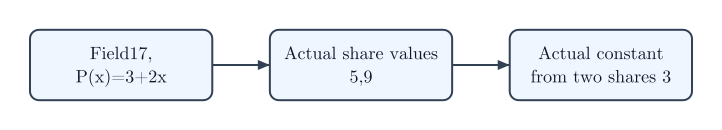
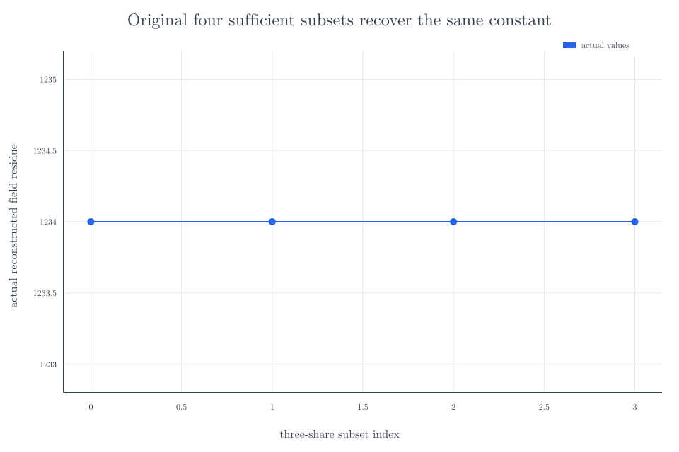
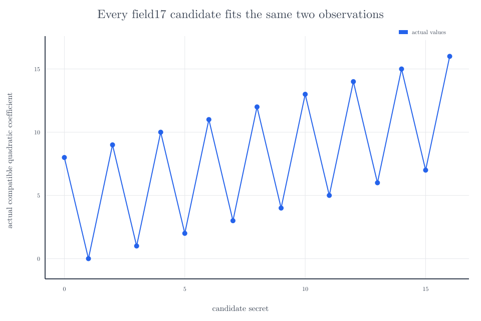
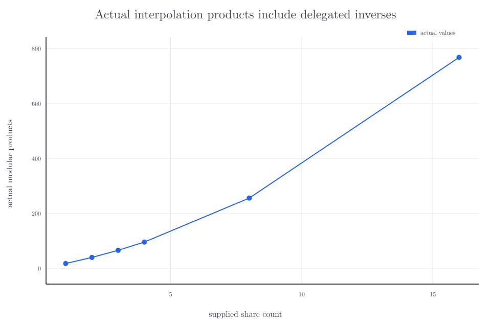

Shamir sharing: actual prime-field evaluations and reconstruction ambiguity
Abstract
Evaluate a secret polynomial at nonzero field coordinates, then reconstruct its constant term from enough shares. Actual modular term histories precede the original secret1234, prime2087, coefficients166 and94, and four three-share reconstructions.
Mechanism and mathematical scope
Over a prime field, P(x)=s+a1*x+...+a_(k-1)*x^(k-1). Distinct nonzero coordinates yield a nonsingular interpolation system. Lagrange evaluation at zero is
Any k points recover a polynomial of degree at most k-1. Privacy from fewer points additionally requires independent uniformly hidden coefficients: each candidate constant has equally many compatible coefficient choices. Supplying deterministic public coefficients, as this worked example does, is not a secure sharing protocol. An unrelated output from interpolating two points is not a proof of privacy; the explicit completion control below shows the actual ambiguity.
A tiny actual producing history
The table and native concept diagram read the same producing execution. Every block below is a complete editable C++ program.
#include <dm/dm.hpp>
int main() {
namespace a = dm::algorithms;
namespace g = dm::graphics;
std::filesystem::create_directories("build");
auto r = a::shamir_split_trace(3, 3, {2}, 17);
auto c = a::shamir_combine_trace({r.shares[0], r.shares[2]}, 17);
std::print("| actual share index | degree | x power | term | y before | y after |\n| ---: | ---: | ---: " "| ---: | ---: | ---: |\n");
for (const auto &s : r.steps)
std::print("| {} | {} | {} | {} | {} | {} |\n", s.share_index, s.degree,
s.power, s.term, s.before, s.after);
std::print("\nActual reconstructed constant {}.\n", c.secret);
g::Diagram concept_diagram(48, 1100);
concept_diagram.node("n0", {0, 0}, "Field17, P(x)=3+2x");
concept_diagram.node("n1", {5, 0},
std::format("Actual share values {},{}", r.shares[0].y,
r.shares[2].y));
concept_diagram.node("n2", {10, 0},
std::format("Actual constant from two shares {}",
c.secret));
concept_diagram.edge("n0", "n1").edge("n1", "n2");
concept_diagram.save_svg("build/shamir_secret_sharing_tiny.svg");
}| actual share index | degree | x power | term | y before | y after |
|---|---|---|---|---|---|
| 0 | 1 | 1 | 2 | 3 | 5 |
| 1 | 1 | 2 | 4 | 3 | 7 |
| 2 | 1 | 3 | 6 | 3 | 9 |
Actual reconstructed constant 3.

The retained original experiment
#include <dm/dm.hpp>
int main() {
namespace a = dm::algorithms;
namespace g = dm::graphics;
std::filesystem::create_directories("build");
auto r = a::shamir_split_trace(1234, 6, {166, 94}, 2087);
std::print("| original share x | actual field y |\n| ---: | ---: |\n");
for (auto s : r.shares)
std::print("| {} | {} |\n", s.x, s.y);
std::print("\n| original three-share indices | actual reconstructed secret | actual modular products " "|\n| --- | ---: | ---: |\n");
std::vector<double> x, y;
const std::vector<std::vector<int>> subsets{{0, 1, 2}, {0, 2, 4}, {1, 3, 5},
{2, 4, 5}};
for (std::size_t i = 0; i < subsets.size(); ++i) {
std::vector<a::SecretShare> chosen;
for (int id : subsets[i])
chosen.push_back(r.shares[id]);
auto c = a::shamir_combine_trace(chosen, 2087);
std::print("| `{}` | {} | {} |\n", subsets[i], c.secret,
c.modular_products);
x.push_back(i);
y.push_back(c.secret);
}
auto two = a::shamir_combine_trace({r.shares[0], r.shares[1]}, 2087);
std::print("\nTwo-share interpolant at zero is {}, which does not certify the original threshold.\n",
two.secret);
auto plot = g::RPlot::create();
plot.lines(x, y, "actual values", {37, 99, 235}).points(x, y, {37, 99, 235},
5).title(
"Original four sufficient subsets recover the same constant").x_label(
"three-share subset index").y_label("actual reconstructed field residue");
plot.save_svg("build/shamir_secret_sharing_original.svg");
}| original share x | actual field y |
|---|---|
| 1 | 1494 |
| 2 | 1942 |
| 3 | 491 |
| 4 | 1315 |
| 5 | 240 |
| 6 | 1440 |
| original three-share indices | actual reconstructed secret | actual modular products |
|---|---|---|
[0, 1, 2] | 1234 | 66 |
[0, 2, 4] | 1234 | 66 |
[1, 3, 5] | 1234 | 66 |
[2, 4, 5] | 1234 | 66 |
Two-share interpolant at zero is 1046, which does not certify the original threshold.

Explicit controls
#include <dm/dm.hpp>
int main() {
namespace a = dm::algorithms;
namespace g = dm::graphics;
std::filesystem::create_directories("build");
const std::vector<a::SecretShare> observed{{1, 5}, {2, 9}};
std::vector<double> x, y;
std::print("| candidate constant | actual compatible a1 | actual compatible a2 | reproduces both public " "observations |\n| ---: | ---: | ---: | --- |\n");
for (std::uint64_t candidate = 0; candidate < 17; ++candidate) {
auto c = a::shamir_quadratic_completion(observed, candidate, 17);
auto r = a::shamir_split_run(candidate, 3, c, 17);
bool matches = r.shares[0].y == 5 && r.shares[1].y == 9;
std::print("| {} | {} | {} | {} |\n", candidate, c[0], c[1], matches);
if (!matches)
return 1;
x.push_back(candidate);
y.push_back(c[1]);
}
auto plot = g::RPlot::create();
plot.lines(x, y, "actual values", {37, 99, 235}).points(x, y, {37, 99, 235},
5).title(
"Every field17 candidate fits the same two observations").x_label(
"candidate secret").y_label("actual compatible quadratic coefficient");
plot.save_svg("build/shamir_secret_sharing_controls.svg");
}| candidate constant | actual compatible a1 | actual compatible a2 | reproduces both public observations |
|---|---|---|---|
| 0 | 14 | 8 | true |
| 1 | 4 | 0 | true |
| 2 | 11 | 9 | true |
| 3 | 1 | 1 | true |
| 4 | 8 | 10 | true |
| 5 | 15 | 2 | true |
| 6 | 5 | 11 | true |
| 7 | 12 | 3 | true |
| 8 | 2 | 12 | true |
| 9 | 9 | 4 | true |
| 10 | 16 | 13 | true |
| 11 | 6 | 5 | true |
| 12 | 13 | 14 | true |
| 13 | 3 | 6 | true |
| 14 | 10 | 15 | true |
| 15 | 0 | 7 | true |
| 16 | 7 | 16 | true |

Actual selected work and sensitivity
#include <dm/dm.hpp>
int main() {
namespace a = dm::algorithms;
namespace g = dm::graphics;
std::filesystem::create_directories("build");
std::vector<double> x, y;
std::print("| supplied threshold | actual split products | actual combine products | actual " "inverse-only products | recovered |\n| ---: | ---: | ---: | ---: | ---: |\n");
for (std::size_t k : {1, 2, 3, 4, 8, 16}) {
std::vector<std::uint64_t> c(k - 1, 7);
auto split = a::shamir_split_run(1234, k, c, 2087);
auto r = a::shamir_combine_run(split.shares, 2087);
std::print("| {} | {} | {} | {} | {} |\n", k, split.modular_products,
r.modular_products, r.inverse_products, r.secret);
x.push_back(k);
y.push_back(r.modular_products);
}
auto plot = g::RPlot::create();
plot.lines(x, y, "actual values", {37, 99, 235}).points(x, y, {37, 99, 235},
5).title(
"Actual interpolation products include delegated inverses").x_label(
"supplied share count").y_label("actual modular products");
plot.save_svg("build/shamir_secret_sharing_work.svg");
}| supplied threshold | actual split products | actual combine products | actual inverse-only products | recovered |
|---|---|---|---|---|
| 1 | 0 | 18 | 16 | 1234 |
| 2 | 4 | 40 | 32 | 1234 |
| 3 | 12 | 66 | 48 | 1234 |
| 4 | 24 | 96 | 64 | 1234 |
| 8 | 112 | 256 | 128 | 1234 |
| 16 | 480 | 768 | 256 | 1234 |

API and interpretation
The library validates primality, field membership, distinct nonzero observation coordinates and complete threshold geometry. Arithmetic avoids overflow for primes near the uint64 limit. Combine cannot know an original threshold or authenticate shares. Neither this API nor its traced exponent-dependent implementation is a constant-time secret-handling protocol.
Reusable producers, fixtures and histories live in the canonical C++ library. Captured records own their values and do not come from a separate report replay. Selected counters and record/scalar policies are specified at their API boundaries; they are not peak-byte or wall-time budgets. Synthetic structural inputs are controlled fixtures for these mechanisms.
References
Verification: 126 scoped native cases;21 directly instrumented ASan/UBSan
cases;124 executable public examples;492/492 full-file definitions and10 exact
Sfc64 members;10 hovers;1588 independent records/14377 checks;frozen comparisons
across all ten families with endpoint/full-width field corrections recorded;17
checkout/installed standalone headers and linked/umbrella consumers;40 executed
programs and40 inspected figures with both exports. The complete
original4000-step native tensor SOM trajectory agrees with an independent NumPy
replay, including every winner and final assignment. Receipts:
build/mepml-conversion/batch-344-353/.